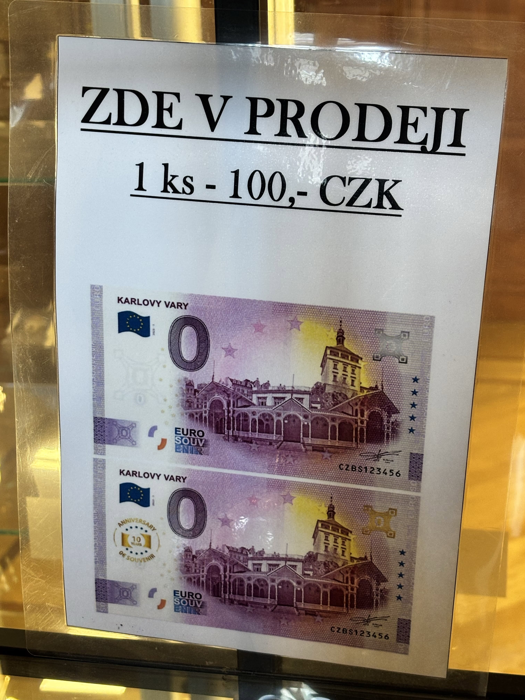
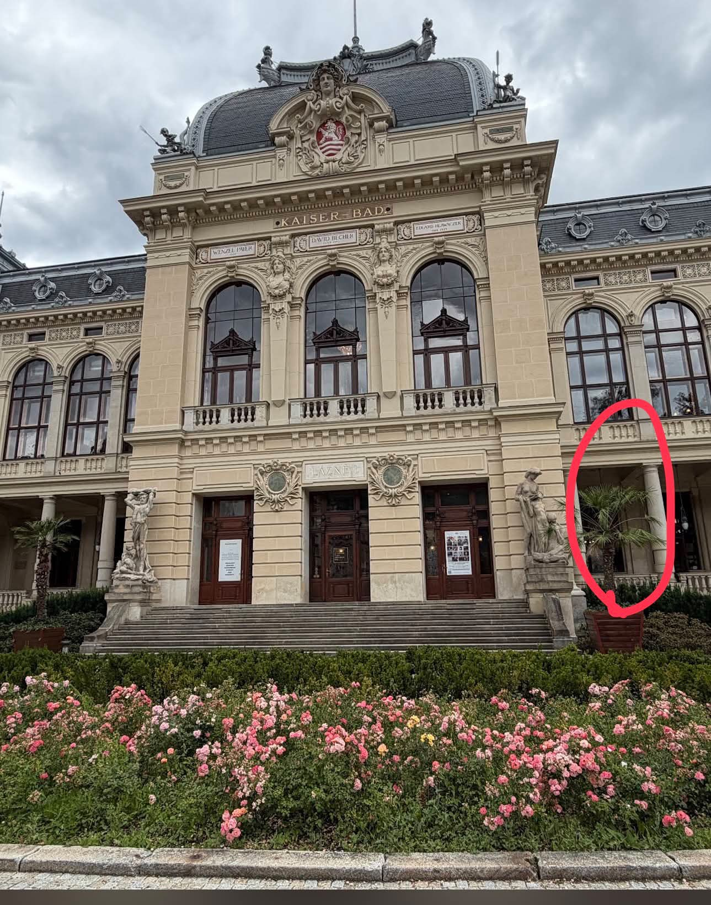
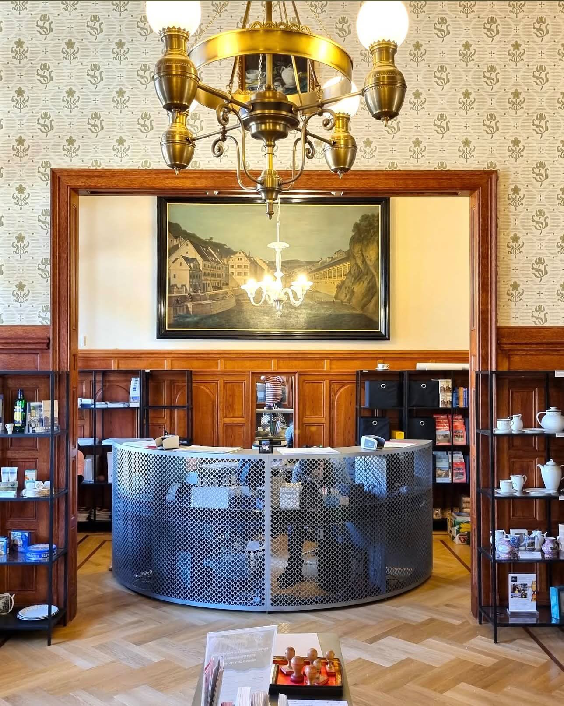

Threads｜卡羅維瓦利 0 歐紀念鈔：照片、旅服中心與價格
重點
作者分享在捷克溫泉城市卡羅維瓦利找到 0 歐紀念鈔。原帖價牌寫「1 ks - 100,- CZK」，即每張 100 捷克克朗；這是照片所記錄的當時價格，不保證現在相同或有庫存。
主帖與作者續文
@sherry810930 表示「好幸運有買到」、「不好找」。她在回覆中指出販售地點為旅客服務中心：面向建築物從右側門進入，向櫃檯人員詢問，當時由抽屜取出，可刷卡。這些是作者個人經驗，不是目前供應或支付方式的保證。作者分享的地圖指向 Císařské lázně 分館；卡羅維瓦利觀光網站列有 Infocentrum Císařské lázně，地址 Mariánskolázeňská 2, 360 01 Karlovy Vary，電話 +420 355 321 176。官方頁核實分館和地址，但未證實該紀念鈔現售或現價；出發前可向旅服中心確認。

逐張看照片
主帖唯一照片是價牌：上方捷克文「ZDE V PRODEJI」意為此處販售，標價 1 ks／100 CZK。下方印有兩幅同款城市圖案示意，一般版與帶「ANNIVERSARY 10 YEARS」標記版本；兩幅皆顯示 KARLOVY VARY、0 和 EURO SOUVENIR。照片是價牌上的示意圖，不能據此斷言現場曾同時有兩款現貨，或作者買到哪一版。圖上示意編號不代表作者購入實物序號。商家 Nunofi 分列 2025 一般版及週年版，可交叉佐證版本名稱，但不證明該店就是作者的實體販售點。


續文兩張照片分別提供建築與櫃檯線索，未顯示更多紀念鈔或可核對的售價。圖片取自原帖公開提供的最高解析候選檔；公開可見或標註出處不等於取得再利用授權，如需轉載請先向權利人確認。
0 歐是什麼？
0 euro souvenir 是收藏用旅遊紀念品，不是可用來支付的法定貨幣；0 不代表免費。Euro Note Souvenir 的 FAQ 明確說明不能作貨幣或支付使用；歐洲央行列出的第一套真實歐元紙鈔面額為 5、10、20、50、100、200、500 歐元，沒有 0 歐。它的購買價格、版本與是否仍供應須與票面面額分開理解。
查核範圍
主帖與其公開可見的作者續文，以及各篇全部 3 張原圖已逐張檢視。未登入、購買或聯繫店家；未獨立核對印量、發售日期、作者買到的版本、當前庫存或當前價錢。不要將作者當時經驗當作即時營業資訊。
來源
- https://www.threads.com/share/_iI2xrrEH
- https://www.threads.com/@sherry810930/post/DgFdoKOCCKb
- https://www.threads.com/@sherry810930/post/DgFhERlCA_T
- https://maps.app.goo.gl/pFJSwDohQWVm8BkY6?g_st
- https://www.karlovyvary.cz/cs/infocentrum-mesta-karlovy-vary
- https://www.ecb.europa.eu/euro/banknotes/current/html/index.en.html
- https://www.euronotesouvenir.ie/FAQ.php
- https://www.nunofi.cz/0-euro-suvenyr-cesko-2025-karlovy-vary
- https://www.nunofi.cz/0-euro-suvenyr-cesko-2025-karlovy-vary-vyroci